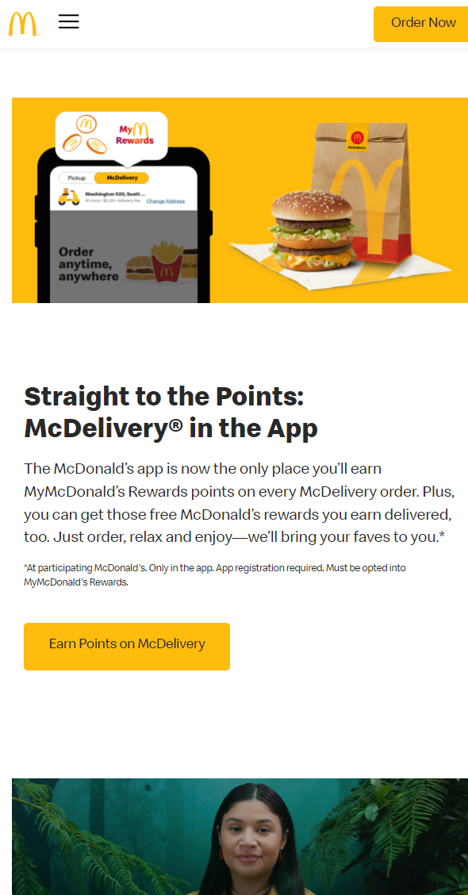

Colors
Mcdonald's
mcdonalds.com Mcdonalds makes excellent use of their brand colors in virtually all of their advertising. I feel that the colors work particularly well together in the screenshot above. They immediately draw the viewers eyes to the bag at the middle of the page, and the delicious BigMac sitting next to it.
Repetition
Audible
Audible.comAudible's home page features a great usage of the design principle of repetition. The many identically-shaped rounded squares (each of which depicting a book cover) are visually appealing, and provide the user with a sense of comfort and familiarity.
Contrast
AMD
AMD.comThe contrast used by AMD on their homepage is easily noticed. The contrast between the black background and the white text unconsciously catches ones attention, and draws them in to read more. Further down on the page, they continue to make use of contrast by placing picture of their dark-colored products on backgrounds of pure white.